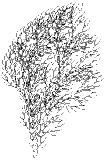

L-Systems
Bracketed L-Systems
To generate branching patterns, Lindenmayer added another feature, the
stack,
a list of positions and directions, and two more symbols, [ and ], to the alphabet.
| The symbol [ means to put the current position and direction at the top of the stack.
|
| The symbol ] means to move the current position and direction to the top entry
of the stack, and remove that entry from the stack.
|
As an example, we construct a geometric
realization of the string
F[+F[+F]F][-F[-F]F]F[+F][-F]
taking q = 30 deg.
| To illustrate the making of realisitc images of plants,
here are the first, second, and fourth
iterates of the L-System with
|
| axiom = F and
|
| production rule F -> FF-[-F+F+F]+[+F-F-F] (all other symbols are replaced by
themselves)
|
| taking q = 22 deg.
|
| 
|
Exercise For the L-system with axiom F and production rule
F -> FF[+F][-F], write the string resulting from one application of the
production rule to the axiom, and write the string resulting from two applications of the
production rule to the axiom. Taking
q = 90 deg, draw geometric realizations of
these strings. If you feel especially ambitious, try the next step.
Here are the answers.
Return to L-Systems.